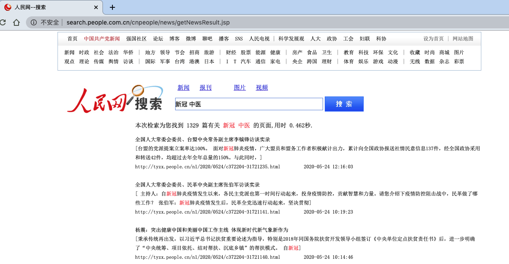
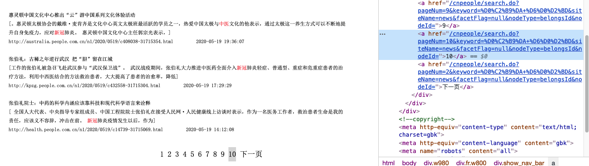

使用Selenium提取人民网搜索数据¶
http://search.people.com.cn/cnpeople/news/getNewsResult.jsp

点击下一页页面的URL不变

鼠标右键查看页码
url = 'http://search.people.com.cn/cnpeople/search.do?pageNum='
path = '&keyword=%D0%C2%B9%DA+%D6%D0%D2%BD&siteName=news&facetFlag=null&nodeType=belongsId&nodeId='
page_num = range(1, 30)
urls = [url+str(i)+path for i in page_num]
for i in urls[-3:]:
print(i)
http://search.people.com.cn/cnpeople/search.do?pageNum=27&keyword=%D0%C2%B9%DA+%D6%D0%D2%BD&siteName=news&facetFlag=null&nodeType=belongsId&nodeId=
http://search.people.com.cn/cnpeople/search.do?pageNum=28&keyword=%D0%C2%B9%DA+%D6%D0%D2%BD&siteName=news&facetFlag=null&nodeType=belongsId&nodeId=
http://search.people.com.cn/cnpeople/search.do?pageNum=29&keyword=%D0%C2%B9%DA+%D6%D0%D2%BD&siteName=news&facetFlag=null&nodeType=belongsId&nodeId=
无法通过requests直接获取¶
提醒：您的访问可能对网站造成危险，已被云防护安全拦截
import requests
from bs4 import BeautifulSoup
content = requests.get(urls[0])
content.encoding = 'utf-8'
soup = BeautifulSoup(content.text, 'html.parser')
soup
import requests
from bs4 import BeautifulSoup
content = requests.get(urls[0])
content.encoding = 'utf-8'
soup = BeautifulSoup(content.text, 'html.parser')
soup
from selenium import webdriver
from bs4 import BeautifulSoup
import time
browser = webdriver.Chrome()
dat = []
for k, j in enumerate(urls):
print(k+1)
time.sleep(1)
browser.get(j)
source = browser.page_source
soup = BeautifulSoup(source, 'html.parser')
d = soup.find_all('ul')
while len(d) < 2:
print(k+1, 'null error and retry')
time.sleep(1)
browser.get(j)
source = browser.page_source
soup = BeautifulSoup(source, 'html.parser')
d = soup.find_all('ul')
for i in d[1:]:
urli = i.find('a')['href']
title = i.find('a').text
time_stamp = i.find_all('li')[-1].text.split('\xa0')[-1]
dat.append([k+1, urli, title, time_stamp])
browser.close()
len(dat)
1
2
3
4
5
6
7
8
9
10
11
11 null error and retry
12
13
14
15
16
17
18
19
20
21
22
23
24
25
26
27
28
29
1416
import pandas as pd
df = pd.DataFrame(dat, columns = ['pagenum', 'url', 'title', 'time'])
df.head()
| pagenum | url | title | time | |
|---|---|---|---|---|
| 0 | 1 | http://health.people.com.cn/n1/2020/0606/c1473... | [全国首部新型冠状病毒肺炎中医医案类专著在京举行新书首发仪式] | 2020-06-06 10:33:49 |
| 1 | 1 | http://health.people.com.cn/n1/2020/0606/c1473... | 为维护人民健康提供有力保障 | 2020-06-06 08:48:46 |
| 2 | 1 | http://politics.people.com.cn/n1/2020/0606/c10... | 为维护人民健康提供有力保障 | 2020-06-06 05:09:28 |
| 3 | 1 | http://opinion.people.com.cn/n1/2020/0606/c100... | 人民日报评论员：强化公共卫生体系的科技支撑 | 2020-06-06 05:07:22 |
| 4 | 1 | http://health.people.com.cn/n1/2020/0605/c1473... | 防控疫情，中医药发挥了重要作用 | 2020-06-05 08:36:27 |
len(df)
1416
df.to_csv('../data/people_com_search20200606.csv', index = False)
Reading data with Pandas¶
with open('../data/people_com_search20200606.csv', 'r') as f:
lines = f.readlines()
len(lines)
1423
import pandas as pd
df2 = pd.read_csv('../data/people_com_search20200606.csv')
df2.head()
len(df2)
1416
for i in df2['url'].tolist()[:10]:
print(i)
http://health.people.com.cn/n1/2020/0606/c14739-31737564.html
http://health.people.com.cn/n1/2020/0606/c14739-31737424.html
http://politics.people.com.cn/n1/2020/0606/c1001-31737282.html
http://opinion.people.com.cn/n1/2020/0606/c1003-31737274.html
http://health.people.com.cn/n1/2020/0605/c14739-31736476.html
http://politics.people.com.cn/n1/2020/0605/c1001-31735966.html
http://world.people.com.cn/n1/2020/0604/c1002-31735815.html
http://www.people.com.cn/n1/2020/0604/c32306-31735734.html
http://cpc.people.com.cn/n1/2020/0604/c419242-31735244.html
http://health.people.com.cn/n1/2020/0604/c14739-31734772.html